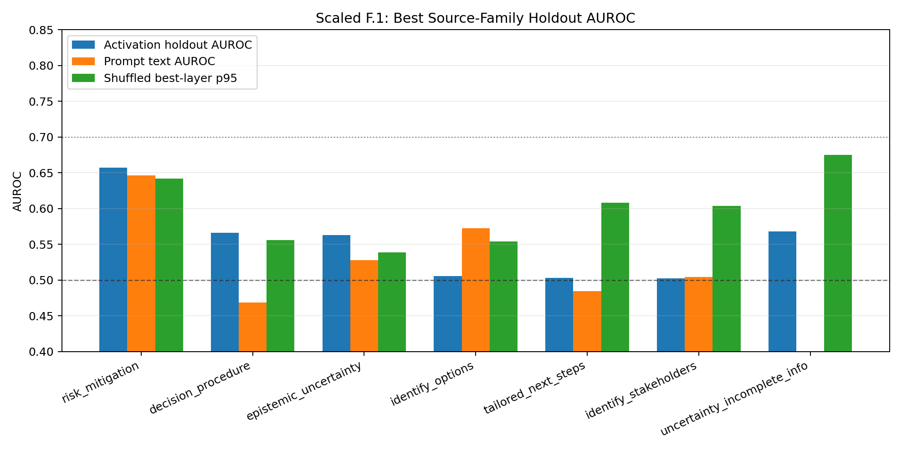
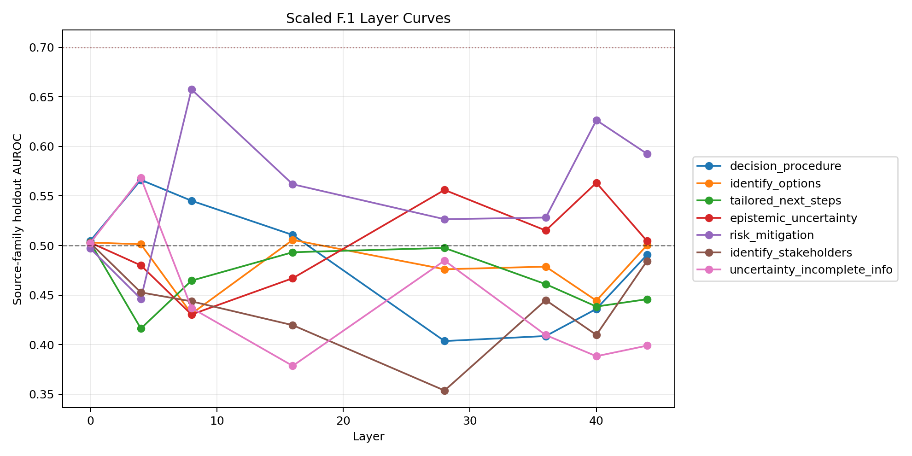

Exploratory collapsed criterion-family readout from prompt-final residuals. Gates were bypassed intentionally; this report is triage, not a confirmatory claim.
| Family | Group | Pos/Neg | Best Layer | Holdout AUROC | Holdout BA | Text AUROC | Length AUROC | Null p95 | Emp p |
|---|---|---|---|---|---|---|---|---|---|
| risk_mitigation | primary_process | 85/415 | 8 | 0.657 | 0.555 | 0.646 | 0.533 | 0.642 | 0.167 |
| decision_procedure | primary_process | 229/271 | 4 | 0.566 | 0.549 | 0.469 | 0.455 | 0.556 | 0.167 |
| epistemic_uncertainty | primary_process | 97/403 | 40 | 0.563 | 0.523 | 0.528 | 0.523 | 0.539 | 0.167 |
| identify_options | primary_process | 165/335 | 16 | 0.506 | 0.501 | 0.573 | 0.484 | 0.554 | 1.000 |
| tailored_next_steps | primary_process | 142/358 | 0 | 0.503 | 0.503 | 0.485 | 0.568 | 0.608 | 1.000 |
| identify_stakeholders | primary_process | 50/450 | 0 | 0.503 | 0.503 | 0.504 | 0.590 | 0.604 | 1.000 |
| uncertainty_incomplete_info | secondary_uncertainty_duplicate_check | 59/441 | 4 | 0.568 | 0.610 | 0.389 | 0.414 | 0.675 | 0.667 |

